Sharing with Remote Calendars (CalDAV)
Sharing with Remote Calendars (CalDAV)
Sharing with Remote Calendars (CalDAV)
Sharing with Remote Calendars (CalDAV)ReminderFox has long supported sharing/synchronizing reminders with other systems by uploading or downloading the entire calendar at a time. This method has been used by many Reminderfox users for a long time. It's configured with the Options tab:Network settings (or tab:Sync).
Starting with ReminderFox 2.1, we have introduced a new method to synchronize on an "event-by-event" basis. This has the advantage it can by synchronized with other 'Remote Calendars' (such as Google Calendar) which often support synchronization with devices like iPhone/iPad or Android based phones or pads. The sync feature between Reminderfox and those 'Remote Calendars' uses a communication standard, called CalDAV. For details see here ).
Reminderfox working with 'Remote Calendars' is an alternative sync method beside the classic file download protocol (like ftp) or sharing the ICS data file between Reminderfox and another application (like Lightning). So the user has to decide to use the classic method or working with 'Remote Calendar' systems / CalDAV.
Note
With using the synchronization with 'Remote Calendars' the classic networking method will be switched off. This is because using both methods simultaneously could corrupt the reminder data. Also sharing the ICS data file with another calendar application (like Lightning) should be disabled; every calendar should use its own ICS data file. If a sync with Lightning is required, it should use CalDAV synchronisation also.
First a service/server is required which supports the CalDAV synchronization protocol. The ReminderFox team has developed for and tested with several popular calendar services. The ReminderFox remote calendar settings provide initial settings to help users in connecting to these services, please see below.
Tested 'Remote Calendar'/CalDAV servers For Reminderfox the following CalDAV servers have been tested successfully:
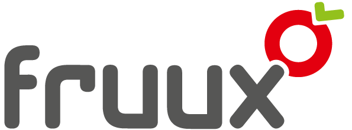, OwnCloud, Radicale, Baïkal, Google Calendar.
Other CalDAV servers It's recommend to start with one of the tested servers, however other CalDAV-based servers may work as well. It's planned to add more servers with future releases. To use other CalDAV servers the following dialogs have to be completed accordingly.
The CalDAV configuration
On the CalDAV server(s) the user has to define one or more accounts and those definitions are used to configure Reminderfox/CalDAV feature.
Reminderfox recommends this provider; it's free and their goal is : "We absolutely ♥ open standards! So with CardDAV and CalDAV you won't be locked in to any particular vendor." .. so it matches with the Reminderfox's goal supporting open standards.
Join the fruux service, log into your account and configure your calendars and tasks.
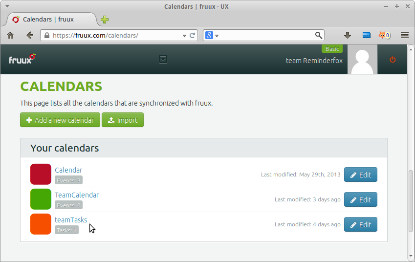
After defining the calendar(s) find on the [Calendar] page the details like: Title and the number of events/tasks stored, see example:
-- 'Calendar', 3 events -- 'TeamCalendar', no events -- 'teamTasks', one Task/Todo
With configuring Reminderfox Remote Calendar you will find those details again. Initially all tasks collections will have a leading 't:', so the above shown 'teamTasks' will be shown on the Reminderfox configuration dialog with 't:teamTasks'
Also remember username and password to the fruux account. That's all you need here.
OwnCloud
OwnCloud has the advantage of not requiring an external provider but rather maintaining all data in your own personal network. To achieve this OwnCloud server has to be installed on the local computer network which could be a separate local/private server or a desktop / laptop computer as well. There is a broad base of operating systems for installing and running OwnCloud. Please refer to the Administrator Documentation how to install the OwnCloud server version. After installation of OwnCloud server, login to the account and make sure to select the "Calendar" -- see picture below.
On the Calendar tab a first calendar named "Default calendar" is already defined, additional calendars can be added with the button [New Calendar].
| 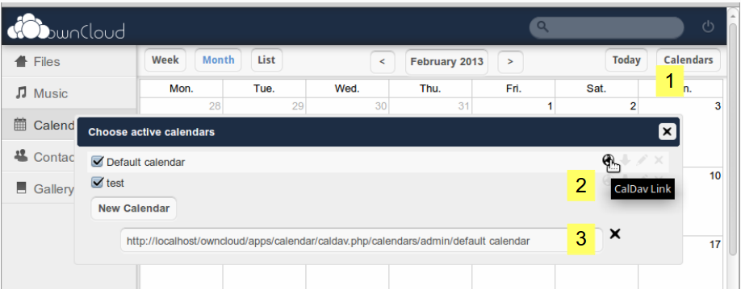 | 1. Select "Calendars", it opens the dialog "Choose active calendars". All defined calendars are shown. |
| 2. Clicking on the first icon for an calendar entry will show an additional textbox | |
| 3. The additional textbox has the login string for that selected calendar. |
http://localhost/.. this is the address with using the browser on the same machine the OwnCloud server is installed.
If your Reminderfox is installed on a different computer you need to have access between the OwnCloud server and the Reminderfox computer. Your login string may be something like
http://myPrivateSystem/OwnCloudServer/..Radicale
The Radicale Project is a complete CalDAV (calendar) and CardDAV (contact) server solution.
Calendars are available for both local and remote access. Reminderfox made provision to easily setup a Radicale local based calendar.
Local Access: Calendars used with Radicale stored to a local instance need to follow this configuration detail:
http://localhost:5232/{userName}/{calendarName}.ics/
with
To start with a new calendar on Radicale just point your browser to the URL build with the concept above, like this: http://localhost:5232/fred/myCalendar.ics/.
That way during the Add Calendar dialog Reminderfox will offer the Radicale calendar with "myCalendar" for events and "t:myCalendar" for Todo's/Tasks.
Remote Access: For remote access of a calendar on an external server the address of that calendar is required. See also below.
Google Calendar
Note: Google announced a different authentication starting Sept.2013. Reminderfox was updated for that authentication/Login. See here how to use that Google authentication (OAuth2) with Reminderfox, please make sure to use Reminderfox version 2.1.4
Google supports the CalDAV Standard for events (only) which is the base for Reminderfox working with Remote Calendars.
Google Calendar uses the Google mail account login parameters to give access to the calendars; for each account it offers a Primary Calendar and Group Calendars.
For both calendar types the details can be found on a popup on the Goggle Calendar main page:
| 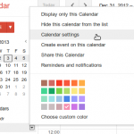 | Move down to "Calendar Address" |
On Reminderfox the 'Remote Calendar' accounts will be defined on Reminderfox Options --> tab:Sync. A typical configuration would look like this:
| 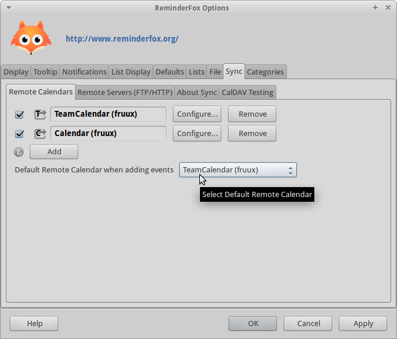 | On the Reminderfox Options page find the tab:Sync --> 'Remote Calendar' to show all configured calendars. The example (click on it to enlarge) shows the two fruux calendars "Calendar" and "TeamCalendar" which were configured at the fruux account page. See the steps below how to configure it with Reminderfox. Note: The configuration of these fruux accounts on Reminderfox are shown below. Configuring for ownCloud, Radicale or Google Calendar are similar |
On tab:'Remote Calendar' the configured calendars are shown row by row. The example has two rows with accounts, both accounts are "Active". Note: For setting 'Active' see below -- it will be used to selectively enable/disable account activities
Each account row has:
-- a tic box to set the 'Active' status of that account,
-- an account ID (eg. T ),
-- the account title (TeamCalendar (fruux),
-- buttons for [Configure] and [Remove]
Below the account list a button [Add] allows to configure more remote calendars.
When adding a reminder with the Reminder "Add Dialog" at the top a menu lets the user select for which account that new reminder has to be stored. To simplify this a "Default Remote Calendar" can be selected. That default calendar will be preselected on the "Add Dialog", but any other account can be selected with the menu selector (see below 2.3). On the "Edit Dialog" that selector will be set to the calendar location for the edited reminder.
Some provisions have been made to easily configure the CalDAV server account settings within Reminderfox. Using the [Add] button on the tab:Sync the "Remote Calendar Account Definition" dialog is opened:
| 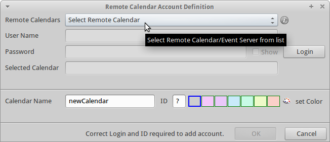 | The top selector gives access to the configuration templates for fruux,
ownCloud (local), Radicale (local), Google Calendar.
The menu item [Other (Define your own)] is used for remote located calendars with ownCloud, Radicale or Baikal (see below 2.3) or for other additional individual calendar systems. |
| 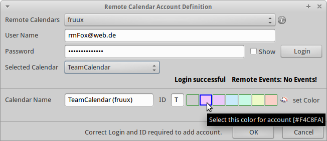 | Selecting a template enables the User Name and Password boxes; add those login details and press [Login].
Successful login fills in the "Selected Calendar" box a menu with all calendars and tasks/todos found for that account. |
| Our example shows the two calendars and one tasks we know from the fruux pages. Selecting one of the calendars/tasks will automatically retrieve details from the remote calendar system. | |
| 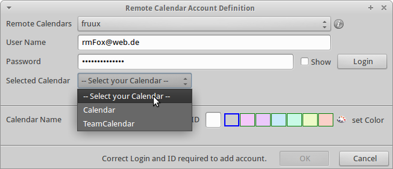 | The remote calendar "TeamCalendar" has been successfully retrieved, there are no events stored.
The second part shows a preselected name and an account ID. A color can be selected which is used for background color on the Reminderfox Main List (also see below). Only after a successful login and a non-duplicate ID the button [OK] is activated and that remote calendar is added to the list.If you get a notice about a duplicated ID the [OK] button will be disabled as well. Change that ID box entry (terminate with tab) and get the [OK] enabled to terminate the configuration. |
| 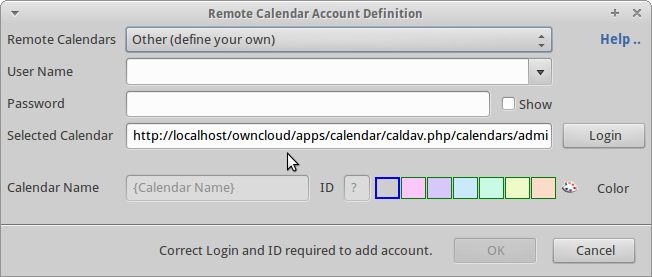 | For external located calendars, e.g. with ownCloud, Radicale or Baikal the URL of the calendar can be entered with the menu selection
[Other (define your own]
For the 'Selected Calendar' a preset for ownCloud will be shown, just overwrite it with the known calendar URL like this: http://calendarsystem.my_private_area.org/myname/calendar/ Fill in 'User Name' and 'Password' and press [Login]. If Reminderfox finds that calendar, the dialog will change the URL textbox to a pulldown menu to offer the known Calendars or Todos/Tasks .. same as above shown with fruux. |
Deleting a Remote Calendar with events stored for that Remote Calendar is not recommended. The user gets an alert and will be asked to acknowledge the deletion. The events will not be lost, but converted to 'local' events.
Changing Account details is limited possible with account name, password and background color only. The Acount ID can only be changed as long as no events have connection to that account / account ID.
Using the [Change] button on the "Remote Calendars" tab for an account opens the "Remote Calendar Account Definition" with limited access to the account attributes:
| 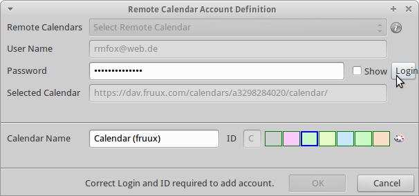 | Any change has to be confirmed with the [OK] button which is only activated after a successful [Login] |
This Login method needs to generate a special login token. This is user specific and will be used once once to setup the login parameter. Take care to generate the token for the owner of the calendar you are going to configure the Reminderfox access.
As shown above open the Options / Sync tab and select [Add] to start configuring an account. Select "Google Calendar (V2)" with the top menu selector.
| 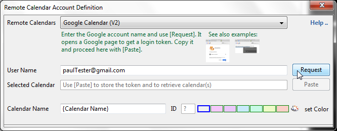 | The top selector with template selection for Google Calendar (V2).
Follow the instruction to [Request] the login token.For a preview of the web pages hover the cursor over the icons.
After copied the token on the web page use the [Paste] button to hand over the token to Reminderfox. |
| 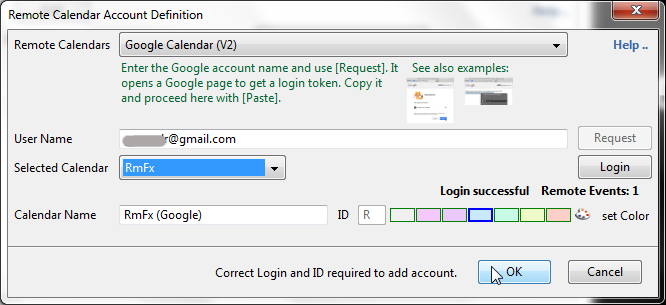 | After pasting Reminderfox will call the Google Calendar and present all defined calendars for the user in the menu box next to "Selected Calendar". Select the calendar of your choice and use [Login] for a first login and check about the remote events stored with that calendar. |
| Our example shows a remote calendar "RmFx" which has
been successfully retrieved, there is one event stored.
The second part shows a preselected name and an account ID. A color can be selected which is used for background color on the Reminderfox Main List (also see below). Only after a successful login and a non-duplicate ID the button [OK] is activated and that remote calendar is
added to the list. If you get a notice about a duplicated ID the
[OK] button will be disabled as well.
Change that ID box entry (terminate with tab) and you get the
[OK] enabled to terminate the configuration. |
|
Reminderfox delivers six colors to be used for coloring the list rows for events with connection to a remote calendar. On the 'Remote Calendar Account Definition' dialog one of six preconfigured colors can be selected by clicking on one of the color boxes.
Using the very left box will clear a selected color.
Using the very right button the current color of a selected box can be changed. If that box is associated to a Remote Calendar the background colors of rows in the Main List will change also.
| 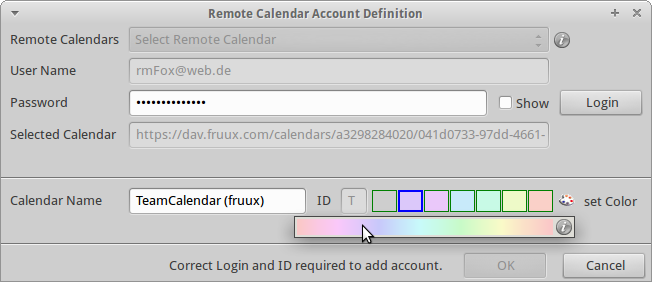 | First select the color box to be changed, then click the [Set Color] button.
Select a color of your choice with clicking on the spectrum bar. The color will be filled into the selected box.The spectrum bar will be closed with moving the cursor out of it. |
Advanced User Tip! The color saturation for the background colors can be changed using the Firefox/Thunderbird 'Preferences' settings, to make the overall colors on the spectrum lighter or darker.
preferences name: extensions.reminderFox.calDAVcolorSaturation
default value: 30
On the Main Dialog List an additional column can be activated to show the 'Remote Calendar' account ID. The right side handle on the top row of the list opens a popup menu and the 'Remote Calendar' item can be selected.
| 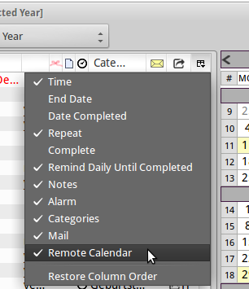 | 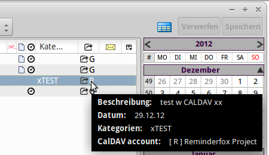 |
Also the Calendar day popup has the 'Remote Calendar'/CalDAV indicator:
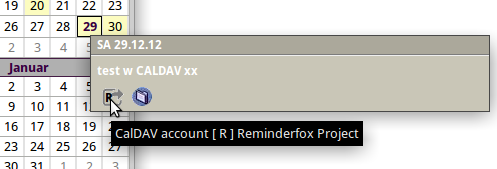
Any normal method will work to define a new event/todo. The "Add/Edit" dialog now has a top menu selector to decide if the reminders is hold locally or also stored on a 'Remote Calendar' account:
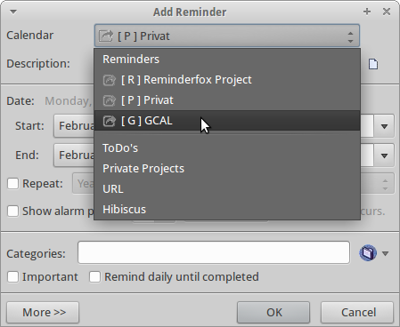
For adding a new reminder the "Default Account" is preselected (see above [P] Privat), but any other account or one of the User Lists can be selected.
For editing an existing reminder the previously selected account for that reminder will be preselected.
The menu shows activated accounts only, the example only shows three remote calendar accounts, also four accounts have been defined (see example screen above).
All other "Add/Edit" dialog entries are the same as with standard usage.
After adding an event on Reminderfox that new event may not be found directly on the remote calendar system. You may need to make sure to 'Refresh' or cause the remote system to update (like changing the week etc).
| Google Calendar |
| 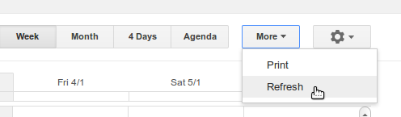 |
| ownCloud Calendar |
| 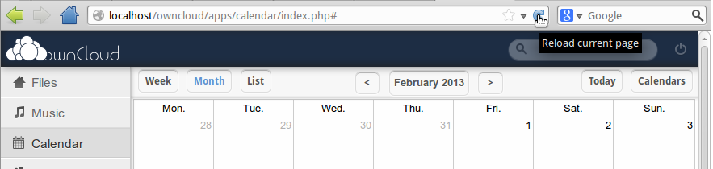
Use the normal page reload |
The setup details described above are configured on Reminderfox Options --> tab:Sync.
Also the Foxy Menu is extended to work with the current implementation,
see menu item [Sync Remote Calendar (CalDAV)]
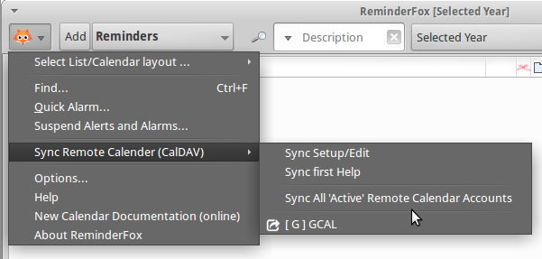
[Sync Remote Calendar (CalDAV)] sub-menu:
Notes: see also 7. Reminderfox/CalDAV Project Status about synchronization.
The reminders stored in Reminderfox are synchronized with the 'active' Remote Calendars each time the Main Dialog is opened.
Also when the Main Dialog is shown using Cntrl R will reload the reminders and run a synchronization.
The Reminder dialog for Add, Edit and Delete works as normal. As mentioned above the top menu selector will decide where the reminder is stored.
Important Note
The current version sends event/todo add/edit/delete directly to the Remote Calendar/CalDAV server!
At the moment the normal Reminderfox saving of events/todos with the extra [Save] and the [Undo] works only for the local storage. So an [Undo] will not remove the 'locally unsaved' reminders from the 'Remote Calendar'/CalDAV server.
For an existing event shown in the Main Dialog List the storage location can be changed. Opening the event (normal edit dialog) the top menu selector for the storage location can be changed. With closing the edit dialog the appropriated delete and add requests will change the location. This works for a single event only.
The previous method is used to add/edit a single reminder with the normal dialog, so it supports sending that single reminder to a selected 'Remote Calendar'/CalDAV server.
'Local' reminders can also be sent to one dedicated 'Remote Calendar'/CalDAV server without using the "Edit" dialog.
[Sync to Remote Calendar]. That opens a submenu with the 'active' Remote Calendars. Selecting a calendar will send the reminder to that 'Remote Calendar'.Note: This updates reminders with the same Remote Calendar ID as the selected on the popup menu. Reminders with different ID will be ignored. See also 'Move Reminder'.
Reminderfox 2.1 is the first version with 'Remote Calendars' support and it will continue to evolve and improve -- especially with help and feedback from the community! The current project status should be considered:
[Save] and the [Undo] works only for the local storage. So an [Undo] will only remove the 'locally unsaved' reminder, but not remove it from the 'Remote Calendar'/CalDAV server.Sync with Google Calendar
For sharing Reminderfox reminders with Google Calendar it's important to know:
The implementation is very much based on Evert Pot's SabreDAV wiki page -- very helpful and the real base for this feature set! A great applause to him!
{kind=link}
{kind=link}
{kind=link}
{kind=link}
{kind=link}
{kind=link}
{kind=link}
{kind=link}